Reading and Writing
Easy · 0021d326
Support
Olms are salamanders that live in underwater caves. Scientists once thought that olms stay in their caves all their lives. However, Raoul Manenti and team claim that olms regularly come to the surface to perform important activities such as finding food.
Which finding, if true, would most strongly support the underlined claim?
- Researchers determine that olms don’t breed often.
- Researchers confirm that olms live in only a few cave systems.
- Researchers discover that earthworms from surface soils are a major part of olms’ diet.
- Researchers learn that olms’ brains differ from other salamanders’ brains.
Answer: C
Key clue: The claim is that olms leave their caves to find food.
- Look for evidence connecting their food to the surface.
- C says surface earthworms are a major part of their diet. That makes surface feeding more likely, so C supports the claim.
Why the other choices fail
- A: Breeding frequency does not show where olms feed.
- B: The number of cave systems does not show whether olms leave them.
- D: Different brains do not establish surface feeding.
Watch out: Evidence should support the specific claim, not just tell you another fact about olms.
Try this question in practice
Compare the original explanation
C: It presents a finding that, if true, would most strongly support Manenti and team’s claim that olms regularly come to the surface to find food. The text explains that scientists previously believed olms remained in their underwater caves throughout their lives, but Manenti’s team claims that olms actually surface regularly to perform important activities like finding food.
A: Information about olms’ breeding frequency wouldn’t support the claim about their leaving their underwater habitats to obtain food.
B: Learning that olms live in only a few cave systems wouldn’t support the claim about their regular visits to the surface.
D: The differences between olms’ brains and other salamanders’ brains have no clear connection to olms’ movement beyond their underwater habitats or to their feeding habits.
Easy · 01de46bb
Word
The Menominee and Anishinaabe peoples have been growing wild rice—known as manoomin in the Ojibwe language—in the Great Lakes region of North America for centuries, but climatic changes are causing lakes to get deeper, thereby threatening wild rice. These plants are extremely ______ to water depth during the “floating leaf” stage of development, and if the water is too deep, the buoyancy of the young wild-rice plants can literally uproot them from the lake bottom, destroying them.
Which choice completes the text with the most logical and precise word or phrase?
- immune
- sensitive
- limited
- receptive
Answer: B
Key clue: Deep water can uproot and kill the plants.
- Predict a simple meaning: easily affected by water depth.
- B, “sensitive,” expresses that vulnerability. Read it back: the plants are extremely sensitive to water depth.
Why the other choices fail
- A: “Immune” means protected from the effect—the opposite of the passage.
- C: “Limited to water depth” does not express vulnerability to changes in depth.
- D: “Receptive” means open to receiving something; it does not describe damage from deep water.
Watch out: A word must fit both the meaning and the phrase “___ to water depth.”
Try this question in practice
Compare the original explanation
B: It most logically completes the text’s discussion of wild rice. As used in this context, "sensitive" means vulnerable or easily affected.
A: "immune" means protected or shielded, which wouldn’t make sense in this context.
C: "limited" means confined or restrained, which wouldn’t make sense in this context.
D: "receptive" means open or tolerant, which wouldn’t make sense in this context.
Easy · 02e49a0c
Purpose or structure
Genetic studies have led researchers to suggest that turtles are most closely related to the group that includes modern crocodiles. But studies of fossils have suggested instead that turtles are most closely related to other groups, such as the one that contains modern snakes. However, many of the fossil studies have relied on incomplete data sets. For a 2022 investigation, biologist Tiago R. Simões and colleagues examined more than 1,000 reptile fossils collected worldwide. From this large data set, they found clear agreement with the results of the genetic studies.
Which choice best describes the function of the underlined sentence?
- It offers an overview of the tools scientists use to examine fossils.
- It describes a limitation of some studies about the origin of turtles.
- It summarizes previous research on the evolution of crocodiles.
- It criticizes a widely held belief about genetic studies of reptiles.
Answer: B
Key clue: The underlined sentence says fossil studies used incomplete data.
- Ask what that sentence does, rather than summarizing the whole passage.
- Incomplete data is a weakness in the earlier fossil studies. B describes that limitation.
Why the other choices fail
- A: The sentence names no tools.
- C: It identifies a problem with turtle research; it does not summarize crocodile evolution.
- D: The criticism concerns fossil evidence, not genetic studies.
Watch out: Keep track of which studies are being criticized: fossil studies, not genetic studies.
Try this question in practice
Compare the original explanation
B: It most accurately describes how the underlined sentence functions in the text as a whole. The first two sentences introduce two competing views on the origins of turtles.
A: The underlined sentence doesn’t address the topic of the tools used by scientists to examine fossils.
C: Neither the underlined portion nor the text as a whole discusses the evolution of crocodiles.
D: The underlined sentence is raising an issue with fossil studies, not genetic studies, saying that fossil studies have at times relied on incomplete data.
Medium · 0113152f
Quotation
American fashion designer Patrick Kelly was known for his love of colorful buttons. Many of his signature dresses feature bold assortments of buttons throughout the garment. In a paper, a fashion design student claims that Kelly’s use of buttons as decoration was inspired by his childhood observations of the styles and actions of the women in his family.
Which quotation from a work by a historian would be the most effective evidence for the student to include in support of this claim?
- “Although some of the assortments of buttons appear to be mismatched pieces scattered randomly throughout Kelly’s dresses, his most famous designs feature carefully crafted patterns of matching buttons.”
- “Many of Kelly’s contemporaries were inspired by his designs to incorporate buttons, as well as zippers and snaps, as decorative items in their work.”
- “Kelly’s grandmother, who would repair clothing when he was a child, frequently added mismatched buttons to the clothes to draw attention away from any flaws in the garments.”
- “Kelly was destined to be a designer from a young age: he learned how to sew clothing from his aunt Bertha, and his love of drawing was developed by his mother.”
Answer: C
Key clue: The claim links Kelly’s decorative buttons to women he observed during childhood.
- The evidence needs both pieces: a female relative and buttons used for appearance.
- C supplies both: his grandmother added mismatched buttons to draw attention away from clothing flaws.
Why the other choices fail
- A: It describes his designs without explaining their family influence.
- B: It shows Kelly influencing others—the direction is reversed.
- D: It connects family to sewing and drawing, not decorative buttons.
Watch out: Mentioning his family or his buttons alone is only half the needed connection.
Try this question in practice
Compare the original explanation
C: This quotation draws a direct connection between the use of buttons and Kelly’s stylish female relatives.
A: This choice mentions Kelly’s use of buttons, but it doesn’t connect that design choice to the influence of women in Kelly’s family.
B: This choice discusses how other designers were inspired by Kelly, which doesn’t provide evidence that Kelly was inspired by his family.
D: While this choice does refer to fashionable women in Kelly’s family, it doesn’t connect their influence to Kelly’s use of buttons.
Medium · 01989d77
Inference
Microbes that live in shallow lakes and ponds produce methane, a harmful greenhouse gas. Ecologist Ralf Aben and his team wanted to see how different types of shallow-water plants might affect the amount of methane that escapes into the atmosphere. Aben’s team set up some water tanks with soil and microbes from local ponds. Some tanks had a type of underwater plant that grows in the soil called watermilfoil. Other tanks had either duckweed, a type of plant that floats on the water’s surface, or algae. Aben and his team found that tanks with duckweed and algae released higher levels of methane than tanks with watermilfoil did. This finding suggests that ______
Which choice most logically completes the text?
- the presence of some kinds of underwater plants like watermilfoil helps prevent methane from escaping shallow lakes and ponds.
- shallow lakes and ponds release more methane than deeper bodies of water because shallow bodies of water usually have more plants than deep bodies of water do.
- shallow lakes and ponds are more likely to contain algae than to contain either watermilfoil or duckweed.
- having a mix of algae, underwater plants, and floating plants is the best way to reduce the amount of methane in shallow lakes and ponds.
Answer: A
Key clue: Watermilfoil tanks released less methane than duckweed or algae tanks.
- Keep the conclusion close to the comparison the study actually tested.
- A fits: underwater plants such as watermilfoil may help limit methane escaping from shallow water.
Why the other choices fail
- B: No deep-water tanks were compared.
- C: The study measured methane, not how common each plant is.
- D: No mixed-plant treatment was tested, so “best” is unsupported.
Watch out: Lower emissions do not mean zero emissions, and the study did not test every possible plant arrangement.
Try this question in practice
Compare the original explanation
A: The passage tells us that “tanks with duckweed (a floating plant) and algae released higher levels of methane than tanks with watermilfoil (an underwater plant) did.” This suggests that the presence of some kinds of underwater plants like watermilfoil may help prevent methane from escaping shallow lakes and ponds.
B: The passage doesn’t mention deeper bodies of water at all, so there’s no basis for this inference.
C: The passage doesn’t compare the likelihood of shallow lakes and ponds containing algae, watermilfoil, or duckweed.
D: The study didn’t include any tanks with a mix of plants, so there’s no basis for this inference.
Medium · 03e5cf33
Support
Many insects are iridescent, or have colors that appear to shimmer and change when seen from different angles. Scientists have assumed that this feature helps to attract mates but could also attract predators. But biologist Karin Kjernsmo and a team had the idea that the shifting appearance of colors might actually make it harder for other animals to see iridescent insects. To test this idea, the team put beetle forewings on leaves along a forest path and then asked human participants to look for them. Some of the wings were naturally iridescent. Others were painted with a nonchanging color from the iridescent spectrum, such as purple or blue.
Which finding, if true, would most directly support the team’s idea?
- On average, participants found most of the purple wings and blue wings and far fewer of the iridescent wings.
- On average, participants found the iridescent wings faster than they found the purple wings or blue wings.
- Some participants reported that the purple wings were easier to see than the blue wings.
- Some participants successfully found all of the wings on the leaves.
Answer: A
Key clue: The hypothesis says shifting colors make iridescent wings harder to see.
- Predict the result before checking the choices: people should find fewer iridescent wings than solid-color wings.
- A matches that prediction directly.
Why the other choices fail
- B: Finding iridescent wings faster would suggest they are easier to see.
- C: This compares two solid colors, not iridescence with solid colors.
- D: Some people finding everything does not establish which wings are harder to see on average.
Watch out: Compare iridescent wings with noniridescent wings; a comparison of blue with purple misses the hypothesis.
Try this question in practice
Compare the original explanation
A: It presents the finding that, if true, would most strongly support the research team’s idea about the effect of iridescence, or colors that appear to shimmer and change. The text indicates that although some scientists have assumed that iridescence could attract predators, Kjernsmo’s team wondered if iridescent insects might be harder for other animals to see.
B: If participants located the iridescent wings more quickly than the purple or blue wings, that finding would weaken the team’s idea, not support the team’s idea, since it would suggest that the iridescent wings were easier to see than the noniridescent wings.
C: Finding that some participants believed that the purple wings were easier to see than the blue wings would be irrelevant to the team’s idea.
D: If some participants found all the wings, that wouldn’t support the team’s idea that iridescent insects may be harder to see than noniridescent insects.
Medium · 03eeecf3
Purpose or structure
The following text is from H.D.’s 1916 poem “Mid-Day.” In the poem, the speaker is on a path in an outdoor setting.
A slight wind shakes the seed-pods— my thoughts are spent as the black seeds. My thoughts tear me, I dread their fever. I am scattered in its whirl. I am scattered like the hot shrivelled seeds.
Which choice best describes the function of the underlined portion in the text as a whole?
- It illustrates a change in the natural environment that the speaker implies is responsible for the growing misgivings described in the text.
- It establishes an example of consistency in the natural landscape that the speaker then contrasts with the unpredictability of human emotions.
- It presents an observation of an occurrence in the natural world that the speaker then expands on to convey a sense of a turbulent interior state.
- It evokes the ordinariness of an event in nature to suggest that the critical self-evaluation the speaker engages in is a common pursuit.
Answer: C
Key clue: The wind scatters seeds; the speaker then describes scattered, painful thoughts.
- Connect the natural image to what follows: the unsettled seeds mirror the speaker’s unsettled mind.
- C captures that movement from an observation in nature to an inner emotional state.
Why the other choices fail
- A: The poem does not say the natural event caused the speaker’s feelings.
- B: Nature and the speaker are both unsettled; they are not contrasted as stable versus unpredictable.
- D: The poem does not claim this self-evaluation is common to people generally.
Watch out: A comparison does not prove that the wind caused the speaker’s distress.
Try this question in practice
Compare the original explanation
C: It best describes the function of the underlined portion in the text as a whole. In the text, the speaker mentions the occurrence in nature of seedpods being shaken by a slight wind.
A: The text does not indicate that the seedpods are the cause of the speaker’s state of mind; thus, they could not be responsible for any misgivings the speaker has.
B: The text does not contrast the natural landscape with the speaker’s state of mind or describe the wind shaking the seedpods as consistent; rather, the text suggests that the state of the natural world and the speaker’s state of mind are similar in that both are unsettled.
D: There is no indication in the text that the speaker regularly engages in critical self-evaluation, only that in this particular instance the speaker’s state of mind is turbulent.
Hard · 0045c234
Weaken
Given that stars and planets initially form from the same gas and dust in space, some astronomers have posited that host stars (such as the Sun) and their planets (such as those in our solar system) are composed of the same materials, with the planets containing equal or smaller quantities of the materials that make up the host star. This idea is also supported by evidence that rocky planets in our solar system are composed of some of the same materials as the Sun.
Which finding, if true, would most directly weaken the astronomers’ claim?
- Most stars are made of hydrogen and helium, but when cooled they are revealed to contain small amounts of iron and silicate.
- A nearby host star is observed to contain the same proportion of hydrogen and helium as that of the Sun.
- Evidence emerges that the amount of iron in some rocky planets is considerably higher than the amount in their host star.
- The method for determining the composition of rocky planets is discovered to be less effective when used to analyze other kinds of planets.
Answer: C
Key clue: The claim includes a limit: a planet contains equal or smaller quantities of its host star’s materials.
- To weaken that limit, find a planet with more of a material than its host star.
- C gives exactly that counterexample: some rocky planets contain considerably more iron.
Why the other choices fail
- A: The composition of stars alone does not test the planet–star comparison.
- B: Comparing two stars does not compare a planet with its host star.
- D: A method working poorly on other kinds of planets supplies no direct counterexample to the claimed composition relationship.
Watch out: Shared ingredients alone do not establish the claimed limit on their quantities.
Try this question in practice
Compare the original explanation
C: It presents a finding that, if true, would weaken the astronomers’ claim about the makeup of host stars and their planets. The text explains that because stars and planets begin forming from the same gas and dust, astronomers believe planets should be composed of the same materials as their host stars, but in equal or smaller quantities.
A: A finding only about the makeup of stars, whether they’ve cooled or not, would provide no information about the makeup of planets.
B: A finding about two host stars having similar proportions of certain materials wouldn’t provide any information about the makeup of planets.
D: The text indicates that the astronomers’ claim is based on a fact—that stars and planets begin forming from the same gas and dust in space—which would remain true regardless of the effectiveness of a method for analysis of compositions.
Hard · 0198240a
Support
Under normal atmospheric pressure at Earth’s surface, water molecules form a tetrahedral network stabilized by hydrogen bonds between adjacent molecules. Extreme high pressure, such as can be found in deep ocean waters, destabilizes these bonds and compresses water’s structure, allowing water molecules within organisms to permeate proteins and impede crucial biological functions; yet deep-sea organisms known as piezophiles have adapted to extreme pressure. Studies have found a positive correlation between the depths that various piezophiles inhabit and concentrations of a compound called trimethylamine N-oxide (TMAO) in their muscle tissues, which has led a team of researchers to hypothesize that TMAO reduces water’s compressibility.
Which finding, if true, would most directly support the researchers’ hypothesis?
- Water molecules are found to be impervious to TMAO even when the water molecules’ tetrahedral configuration has been distorted by high pressure.
- Examination of TMAO’s molecular structure shows that TMAO molecules retain their shape even as pressure increases.
- A positive correlation is found between concentrations of TMAO and the rate at which water’s molecular structure compresses as pressure increases.
- Analysis of water’s molecular structure under high pressure reveals that hydrogen bonds are more stable when TMAO is present than when it is not.
Answer: D
Key clue: High pressure compresses water by destabilizing hydrogen bonds. TMAO is proposed to reduce that compression.
- Follow the mechanism: if TMAO keeps those bonds stable, water should better resist compression.
- D reports more stable hydrogen bonds when TMAO is present, directly supporting that mechanism.
Why the other choices fail
- A: Water being impervious to TMAO does not show that TMAO stabilizes water under pressure.
- B: TMAO keeping its own shape does not establish that water resists compression.
- C: More TMAO paired with faster compression points in the opposite direction.
Watch out: Track what must be protected: water’s structure, not TMAO’s own shape.
Try this question in practice
Compare the original explanation
D: It presents a finding that, if true, would support the researchers’ hypothesis that TMAO reduces water’s compressibility. The text explains that at great depths in the ocean, extreme pressure compresses the molecular structure of water by destabilizing the hydrogen bonds between adjacent molecules, thereby allowing water to penetrate proteins and harm the associated organisms.
A: Although the researchers’ hypothesis suggests a relationship between TMAO and water molecules’ tetrahedral molecular structure, that relationship involves TMAO helping maintain water’s tetrahedral molecular structure under high pressure; as presented in the text, the hypothesis doesn’t contend that water molecules are impervious to, or incapable of being penetrated by, TMAO.
B: The text discusses how the molecular structure of water, not TMAO, is compressed under extreme pressure and never addresses how TMAO might be affected by such pressure.
C: The researchers’ hypothesis holds that water under extreme pressure is more resistant, not less, to being compressed when TMAO concentrations are higher.
Hard · 024eb2ec
Main idea
Through adaptive radiation, multiple species of Tetragnatha—a genus of orb-weaving spiders—have significantly diversified their web architecture over a relatively short timescale. To investigate whether the material properties of Tetragnatha silk have been similarly affected by this evolutionary process, Angela M. Alicea-Serrano et al. examined the chemical composition of both the radial (non-sticky threads extending from the center) and capture (sticky threads that hold prey) silks that form the web as well as tested the tensile strength and viscosity of samples collected from three Tetragnatha species at two sites in the Hawaiian archipelago. The team found significant interspecies variation in these biomaterials.
Which choice best states the main idea of the text?
- Research reveals that web architecture among species of Tetragnatha spiders has likely diversified more rapidly than the material properties of Tetragnatha’s silk have.
- Research suggests that the material properties of silk from species of Tetragnatha spiders have diversified during adaptive radiation.
- A study indicates that variations in web architecture among species of Tetragnatha spiders can likely be explained by corresponding variations in the material properties of their silks.
- A study shows that adaptive radiation can explain interspecies variation in the web architecture of Tetragnatha spiders but not in the material properties of the spiders’ silk.
Answer: B
Key clue: The study asks whether silk properties diversified, then finds significant differences between species.
- Separate the background (different web designs) from the tested question (different silk properties).
- B combines the study’s question and result: silk properties appear to have diversified during adaptive radiation.
Why the other choices fail
- A: The text does not compare the speed of the two changes.
- C: The study does not establish that silk differences explain web-design differences.
- D: It denies silk diversification, contradicting the reported differences.
Watch out: Do not turn two kinds of variation into a claim that one caused the other.
Try this question in practice
Compare the original explanation
B: It most accurately states the main idea of the text. The text notes that Tetragnatha spiders have diversified their web architecture, or web design, through adaptive radiation and that Alicea-Serrano et al. investigated whether silk material properties were also affected by this process.
A: The text doesn’t compare the rate of diversification in web architecture to the rate of diversification in silk properties.
C: The study investigated silk properties as a separate question, not as an explanation for differences in web architecture.
D: It contradicts the findings described in the text.
Math
Easy · f5c3e3b8
Exponents and roots
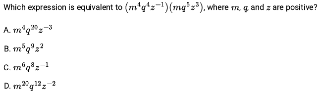
Answer: B
Key clue: Multiplying powers with the same base means adding their exponents.
- Group each letter: m⁴ × m = m⁵; q⁴ × q⁵ = q⁹; z⁻¹ × z³ = z².
- Combine them: m⁵q⁹z², which is B.
Watch out: Add exponents when multiplying like bases; do not multiply the exponents.
Try this question in practice
Compare the original explanation
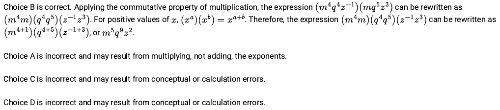
Easy · 3c95093c
Solve a quadratic or other nonlinear equation
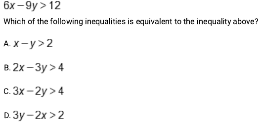
Answer: B
Key clue: Every term in 6x − 9y > 12 has a factor of 3.
- Divide every term on both sides by 3: 2x − 3y > 4.
- That is B. Because 3 is positive, the inequality sign stays the same.
Watch out: Reverse the sign only when multiplying or dividing by a negative number.
Try this question in practice
Compare the original explanation
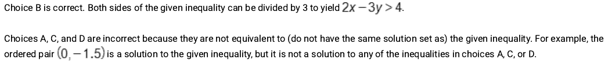
Easy · 72ebc024
Which expression is equivalent?
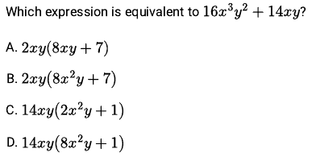
Answer: B
Key clue: Both terms share 2xy.
- Divide each term by 2xy: 16x³y² ÷ 2xy = 8x²y, and 14xy ÷ 2xy = 7.
- Factor: 2xy(8x²y + 7), which is B.
Watch out: Check by distributing: 2xy × 8x²y must recover 16x³y².
Try this question in practice
Compare the original explanation
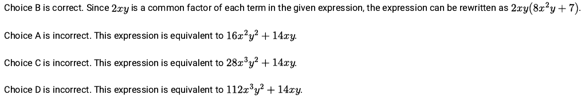
Medium · beca03de
Meaning of a number in a nonlinear model
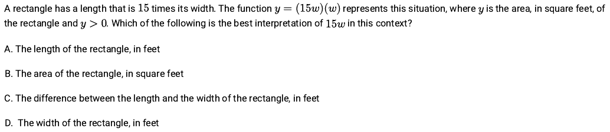
Answer: A
Key clue: Rectangle area is length × width. The expression is (15w)(w).
- The width is w, and the length is 15 times that width: 15w.
- So 15w represents the length in feet. Choose A.
Watch out: The whole product is area; one factor, 15w, is a length.
Try this question in practice
Compare the original explanation
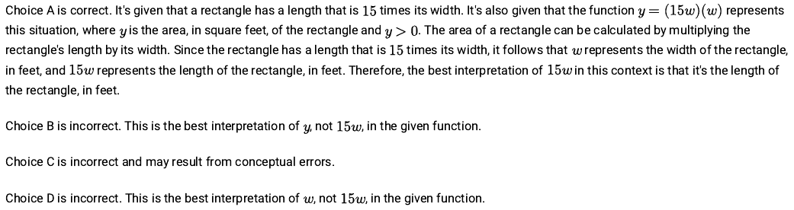
Medium · dd4ab4c4
Which expression is equivalent?
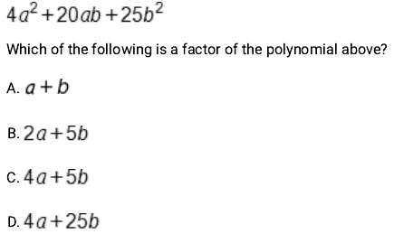
Answer: B
Key clue: 4a² and 25b² are squares: (2a)² and (5b)².
- Check the middle term: 2(2a)(5b) = 20ab. It matches.
- Therefore 4a² + 20ab + 25b² = (2a + 5b)². One factor is 2a + 5b, choice B.
Watch out: A perfect-square pattern needs the middle term to match too.
Try this question in practice
Compare the original explanation
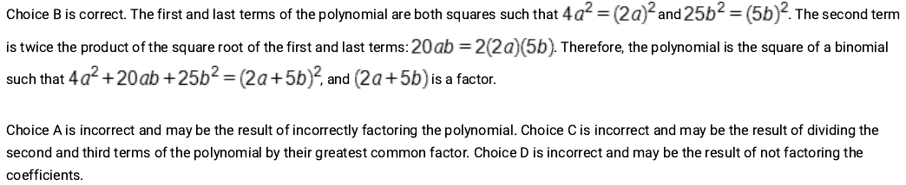
Medium · a5663025
How many real solutions?
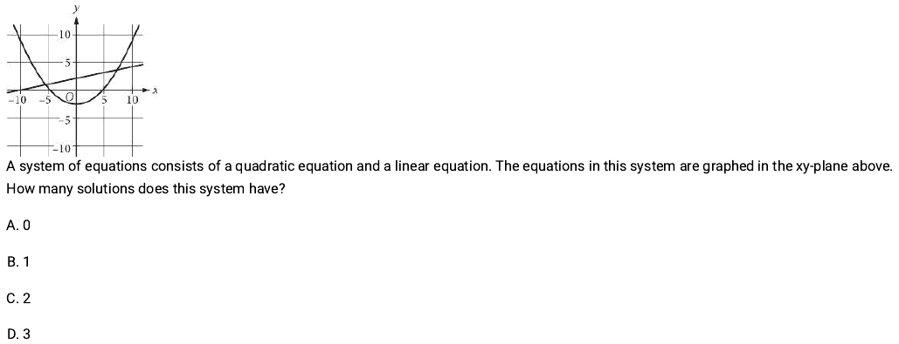
Answer: C
Key clue: A solution to a graphed system is a point shared by both graphs.
- Count the intersections of the line and the parabola. They cross once on the left and once on the right.
- There are 2 solutions, so choose C.
Watch out: Count intersections between the graphs, not crossings of the axes.
Try this question in practice
Compare the original explanation
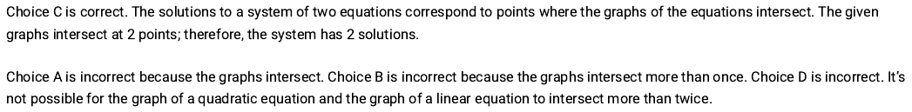
Medium · d0a7871e
Line meets curve
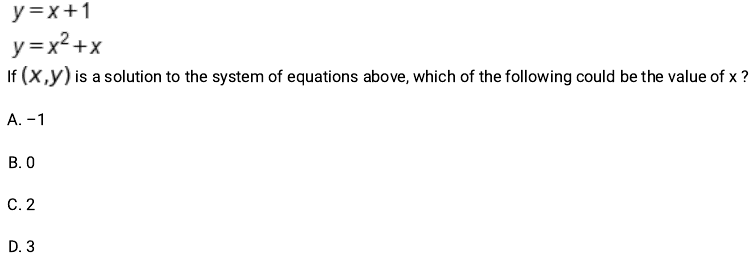
Answer: A
Key clue: Both expressions equal y, so set them equal to each other.
- x + 1 = x² + x. Subtract x from both sides: 1 = x².
- Thus x = −1 or 1. Only −1 appears in the choices, so choose A.
Watch out: “Could be” asks for one possible value; x² = 1 has two roots.
Try this question in practice
Compare the original explanation
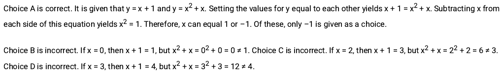
Hard · 512bd5b4
Build the exponential model
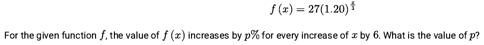
Answer: 44
Key clue: Increasing x by 6 increases the exponent x/3 by 2.
- The growth multiplier is therefore 1.20² = 1.44.
- A multiplier of 1.44 means 144% of the original value, which is a 44% increase. Enter 44.
Watch out: Two 20% increases compound: 1.20 × 1.20, not 20% + 20%. The starting factor 27 cancels in the ratio.
Try this question in practice
Compare the original explanation
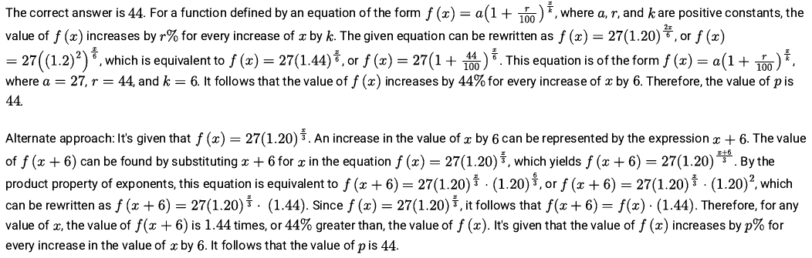
Hard · f01108a8
Zeros and x-intercepts
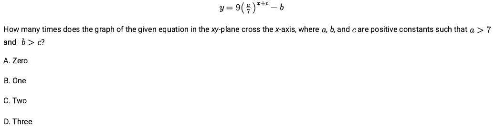
Answer: B
Key clue: Crossing the x-axis means y = 0. The base a/7 is greater than 1.
- Set 9(a/7)^(x+c) = b, so (a/7)^(x+c) = b/9.
- An exponential with base greater than 1 increases continuously from values approaching 0 to arbitrarily large values. Since b/9 is positive, it reaches that target exactly once. Choose B.
Watch out: The shifts change where the crossing happens, not the number of crossings here. No logarithm calculation is needed.
Try this question in practice
Compare the original explanation
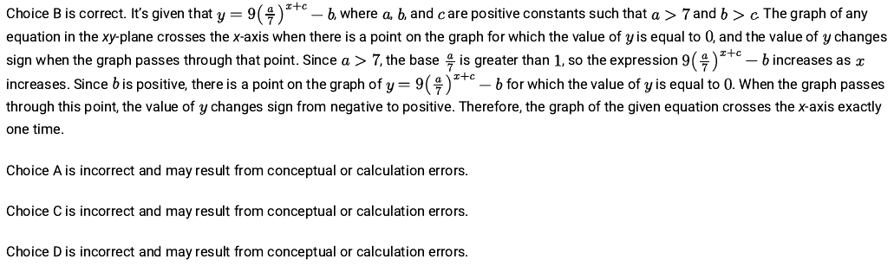
Hard · 301faf80
Solve a quadratic or other nonlinear equation
Answer: 14
Key clue: Let the smaller integer be n; the first is 2n + 5.
- Their product gives n(2n + 5) = 462, or 2n² + 5n − 462 = 0.
- Factor: (n − 14)(2n + 33) = 0. The positive integer root is n = 14.
- Check: the first integer is 33, and 14 × 33 = 462. Enter 14.
Watch out: Translate “5 greater than twice” as 2n + 5, not 2(n + 5). Reject the negative root.
Try this question in practice
Compare the original explanation
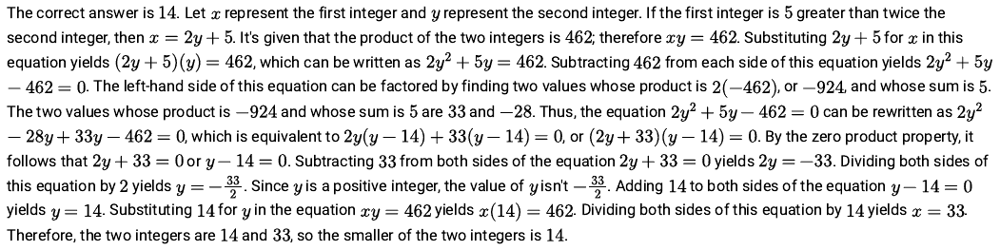